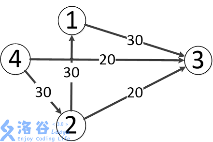
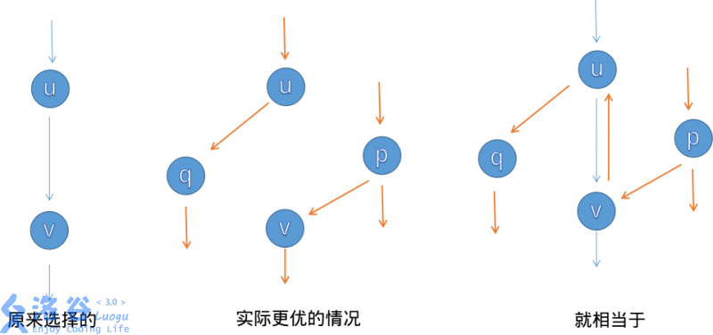

网络流简介
浅谈网络流基础¶
网络流基础知识以及解法¶
网络流在 OI 中是显得尤为重要的。在《算法导论》中就用了 35 页来讲述网络流的知识，在这里，我来给大家讲一讲网络流的一些基础知识。
流量¶
首先我们要认识流量是什么。我们知道，我们城市中的每一条路肯定有一定的宽度，而这些宽度就限定了车辆（我们也可以把红绿灯两端看为一条路的长度）。
网络流就对图诠释上了这么一个值，它不同于最短路。 站向 站有一条流量为 的路，那么你就只能通过 辆（或者是其它单位）车，而且通过以后就无法再通过。我们也就可以推出几个东西：
-
我们可以先通 辆车，再通 辆车（ 这条路的流量）。
-
如果我们从 站到 站只剩 的流量，那么我们有一条流量为 的边连接 和 。我们很快能推出 流到 只有 的流量（因为后者限制了前者）。
最大流¶
先认识一下 () 和 () 的概念。 就是常说的源点， 就是汇点（也就是起点和终点，这个跟最短路的概念是一样的）。我们有一张图，要求从源点流向汇点的最大流量（可以有很多条路到达汇点），就是我们的最大流问题 ()，一般源点是无限流量的。
然后我们来认识一下增广路（注意路不是边），就是说，从源点到汇点，只要有 () 流过去，这条路就是增广路。在一些最大流算法中，就是将这些路增广（意思就是走掉这条路，带走的流量肯定就是这条路的最小流量），如图:

我们从 到 ，肯定可以先从流量为 的这条边先走。那么这条边就被走掉了，不能再选，总的流量为（现在）。然后我们可以这样选择:
-
这条增广路的总流量为 。到 的时候还是 ，到 了就只有 了。
-
这样子我们就很好的保留了 的流量。
所以我们这张图的最大流就应该是 。
求最大流是很简单的，稍后我们会讲解求最大流的 种方法。
最小费用最大流 (MCMF)¶
这也是耳熟能闻的费用流——最小费用最大流 (Minimum cost Maximum flow)。我们给予这张图一个费用值（也就是最短路问题），然后在求出最大流的基础上，把最小费用的路径求出来。这个难度就上升到了提高组的难度，并不是大家都可以先决的。
最大流解法锦集¶
所有代码请看：剪贴板。
Edmond-Karp 动能算法（ 算法）¶
这个算法很简单，就是 DFS找增广路，然后对其进行增广。你可能会问，怎么找？怎么增广？
-
找？ 我们就从源点一直 DFS 走来走去，碰到汇点就停，然后增广（每一条路都要增广）。我们在 DFS 的时候就注意一下流量合不合法就可以了。
-
增广？其实就是按照我们找的增广路在重新走一遍。走的时候把这条路的能够成的最大流量减一减，然后给答案加上最小流量就可以了。
再讲一下反向边。增广的时候要注意建造反向边，原因是这条路不一定是最优的，这样子程序可以进行反悔。假如我们对这条路进行增广了，那么其中的每一条边的反向边的流量就是它的流量。

讲一下一些小细节。如果你是用邻接矩阵的话，反向边直接就是从 变成 。如果是常用的链式前向星，那么在加入边的时候就要先加入反向边。那么在用的时候呢，我们直接 就可以了 ( 为边的编号)。为什么呢? 相信大家都是知道 的，那么我们在加入正向边后加入反向边，就是靠近的，所以可以使用 。我们还要注意一开始的编号要设置为 ，因为边要从编号 开始，这样子 对编号 的边才有效果。
Dinic¶
我们知道，一条路一条路找是十分的慢的，我们就设想可不可以很多条路一起找。答案当然是可以的。我们只需要一个问题，这些路是同时找的，如果有些路很调皮，往回 (别的路) 找，那么别的路不就是异常尴尬。
我们给这张图每一条边都指定一个方向，就不会出现上述情况。这时候我们就可以知道 分层 这个概念。我们对于每一次增广以后的图，给它进行分层。我们规定，低的级别只能去高的级别的点（而且只能高 级别）。而级别就是它与源点的距离。我们对于每一次整体增广来一次 BFS 就可以了。
ISAP¶
这个是 算法的加强版 (Improved)。
最小费用最大流解法¶
最简单的就是 EK+SPFA，也推荐用 zkw 费用流和原始对偶匹配算法。
网络流基础知识拓展¶
前面都看懂的同学可以看一下以下内容。
最小割¶
割其实就是删边的意思，当然最小割就是割掉 条边来让 跟 不互通。我们要求 条边加起来的流量综合最小。这就是最小割问题。
其中我们要认识一个定理: 最小割=最大流
二分图匹配¶
匈牙利算法就是其中一个可撤回贪心的过程，而网络流更快，就在于 撤回 这一过程很快。
建模¶
在会了最大流和费用流后，建模显得尤为重要。就像 JZOI 的 狼与羊的故事，就是一个例子。
前期遇到这种题目，暴搜？神奇 BFS？错误。我们首先要考虑一下会不会有二分图匹配，最小割的模型（一般不会有普通的最大流）。然后建立（超级）源点和（超级）汇点。什么意思？就是当很多个源点和很多个汇点的时候，我们就可以用超级源点和超级汇点代替「源点」和「汇点」的位置（也就是把超级源点连向各个源点，超级汇点连向各个汇点，方向按题意来定）。
这是最常见的建模的方法之一，也是做二分图匹配的方法。还有很多建模方法，可以参考 网络流建模基础。
来一道题练练手: 沙耶的玩偶。
build本页面最近更新：，更新历史
edit发现错误？想一起完善？ 在 GitHub 上编辑此页！
people本页面贡献者：
copyright本页面的全部内容在 CC BY-SA 4.0 和 SATA 协议之条款下提供，附加条款亦可能应用